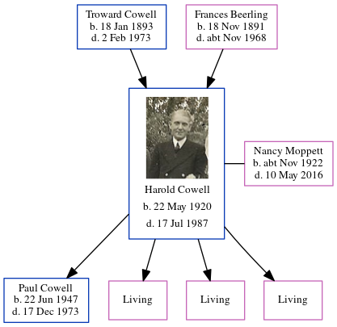

Troward Cowell 1919 - 1941
[ Home ] | [ Calendar ] | [ Surnames Index ] | [ Errors ] | [ Family History ]The older of 2 children of Troward Cowell (a x434 portsmouth rm police life pensioner ex royal navy) and Frances Beerling, Troward Cowell, the second cousin once-removed on the mother's side of Nigel Horne, was born in Marylebone, London, England on 19 Jan 19191,2. On 29 Sept 1939, he was living at 47 Amberley Road, Portsmouth, Hampshire, England1.
He died in Oct/Nov/Dec 1941 in Portsmouth3.
Parents
- Troward was born on 18 Jan 1893
- Frances Annie was born on 18 Nov 1891
Citations
- 1939 Register - Findmypast (was the son of the head of the household incapacitated)
- England & Wales births 1837-2006 - Findmypast
- England & Wales deaths 1837-2007 - Findmypast
Media
England & Wales births 1837-2006 - BMD/B/1919/1/AZ/000221/089
England & Wales deaths 1837-2007 - BMD/D/1941/4/AZ/000181/002
1939 Register Transcription - TNA-R39-2257-2257I-007-10
1939 Register Transcription - TNA-R39-2257-2257I-007-12
Family Tree
Map
Generated by ged2site. Last updated on Jul 3, 2024
Known Issues
Parent Frances is listed in the residence for 19 Jun 1921, but this child is not